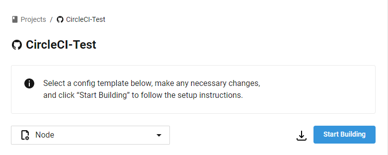
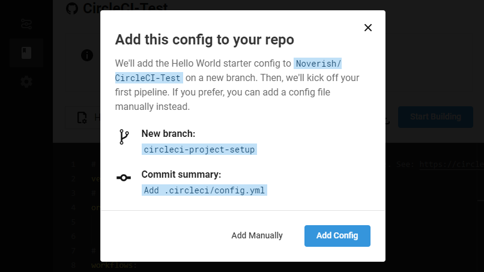
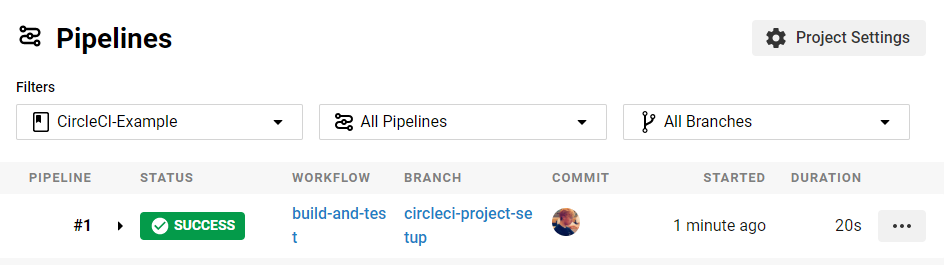

CircleCI 사용해보기
CircleCI를 이용하여 내 Node 프로젝트를 자동으로 테스트하고 Docker Image로 빌드해서 원격 서버에 배포해 보자!
1. 일단 해보기
Github에 CircleCI-Example 이라는 레파지토리를 만들고 아래의 파일을 master 브랜치에 집어넣습니다.
index.js
1 | console.log('hello, world!'); |
package.json
1 | { |
CircleCI에 가서 회원가입을 한 후 CircleCI App으로 들어갑니다.
회원가입은 Github 아이디로 할 수 있습니다.

CircleCI를 사용하기 원하는 프로젝트인 CircleCI-Example의 Setup Project 버튼을 누릅니다.

선택한 프로젝트가 Node 프로젝트이면 CircleCI는 이를 자동으로 인식하고 템플릿을 Node로 선택합니다.
템플릿 선택 버튼 밑에 있는 내용은 나중에 설명드릴테니 Start building 버튼을 누릅니다.

위와 같은 창이 뜰텐데 circleci-project-setup이라는 브랜치를 새로 만들어서 .circleci/config.yml 이라는 파일을 푸쉬하겠다는 의미입니다.Add Config 버튼을 눌러서 진행합니다.

1분 정도 기다리면 Success 라고 뜨면 우리의 첫 CircleCI 설정이 성공적으로 실행되었다는 의미입니다.
2. config.yml 설명
위의 과정에서 생성된 config.yml 파일을 설명하도록 하겠습니다.
1 | # CircleCI 2.1 버전을 사용한다는 의미입니다. |
3. 용어 설명
위의 config.yml 설명에서 익숙치 않은 용어들을 많이 접했을 텐데 그 용어를 밑에서 자세히 설명하겠습니다.
자세한 설명은 문서를 참고해 주길 바랍니다.
Orb
executor, 명령들이 재사용할 수 있게 구성되어 있는 패키지입니다.
본인이 자주 사용하는 명령이나 세팅들을 Orb로 만들어서 다른 프로젝트에 사용할 수 있습니다.
CircleCI에서 제공하는 검증된 Orb도 있고 다른 사용자들이 올린 Orb도 사용할 수 있습니다.
자세한 정보는 Orb 사용법 문서와 Orb 리스트를 참고해 주길 바랍니다.
Job
Step들의 모음. Job의 모든 Step들은 하나의 머신 위에서 실행됩니다.
여기서 머신은 Docker container가 될 수도 있고 실제 물리적인 머신이 될 수도 있습니다.
Steps 말고 Job에 올 수 있는 속성들은 여기에서 확인할 수 있습니다.
Step
Job을 수행하는 동안 실행할 수 있는 명령입니다.
checkout이나 cache같이 CircleCI에 미리 준비되어 있는 명령도 있고
run과 같이 executor에 직접 입력할 수 있는 명령도 있습니다.
Step에 올 수 있는 명령들은 여기에서 확인할 수 있습니다.
4. Docker Image 빌드
1 | FROM node:12.16.1-alpine |
위의 Dockerfile을 프로젝트에 추가합니다.
1 | orbs: |
docker Orb를 불러옵니다.
1 | jobs: |
그런 다음 docker Job을 추가합니다.circleci/example 이라는 이름으로 docker image를 빌드하여 tar 파일로 압축한다는 의미입니다.node/with-cache 명령어를 이용하여 npm install로 다운로드 받는 node_modules 폴더를 캐싱합니다.
1 | workflows: |
build-and-test workflow에 docker job을 추가합니다.
테스트가 끝난 후에 도커 이미지 빌드가 실행되도록 requires를 통하여 의존성을 추가합니다.
5. rsync로 원격 서버에 배포하기
scp 말고 rsync를 사용하는 이유는 rsync가 더 빠르기 때문입니다.
보낼 파일들과 서버에 존재하는 파일을 비교하여 다른 파일들만 보내기 때문입니다.
rsync를 이용하여 원격 서버에 파일을 보내기 위해서는 원격 서버에 접속할 수 있는 SSH 키를 등록해야 합니다.
5.1. SSH 키 생성
일반적으로 서버에 접속할 때는 비밀번호를 씁니다.
하지만 SSH 키를 이용하여 비밀번호를 입력하지 않고도 접속할 수 있습니다.
1 | ssh-keygen -m PEM -t rsa -C "server address" |
위의 명령어를 입력하고 나오는 모든 입력을 엔터로 넘어가면 ~/.ssh 폴더에id_rsa 파일과 id_rsa.pub 파일이 생성됩니다.
이 두 파일들이 SSH Private Key와 SSH Public Key입니다.
5.2. CircleCI 프로젝트에 SSH 키 등록

Project Settings - SSH Keys에 들어가서
위에서 생성된 파일 중 id_rsa 파일의 내용을 복사하여 SSH 키를 추가합니다.
1 | - run: docker save -o circleci-example.tar circleci/example |
추가한 뒤 나오는 fingerprint 값을 가지고 config.yml에 위과 같은 내용을 추가합니다.
현재 머신에 SSH 키를 추가한 후 rsync를 이용해 docker image 파일을 보낸 후 ssh 를 이용해 해당 docker image를 실행시키는 코드 입니다.
6. 특정 branch에서만 동작하도록 하기
1 | workflows: |
job 밑에 filter 속성을 추가하여 master 브랜치에서만 동작하도록 설정할 수 있습니다.
CircleCI 사용해보기